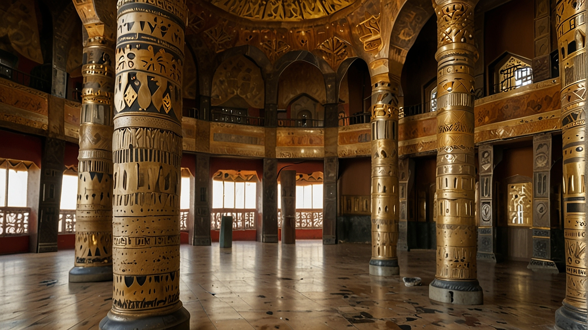
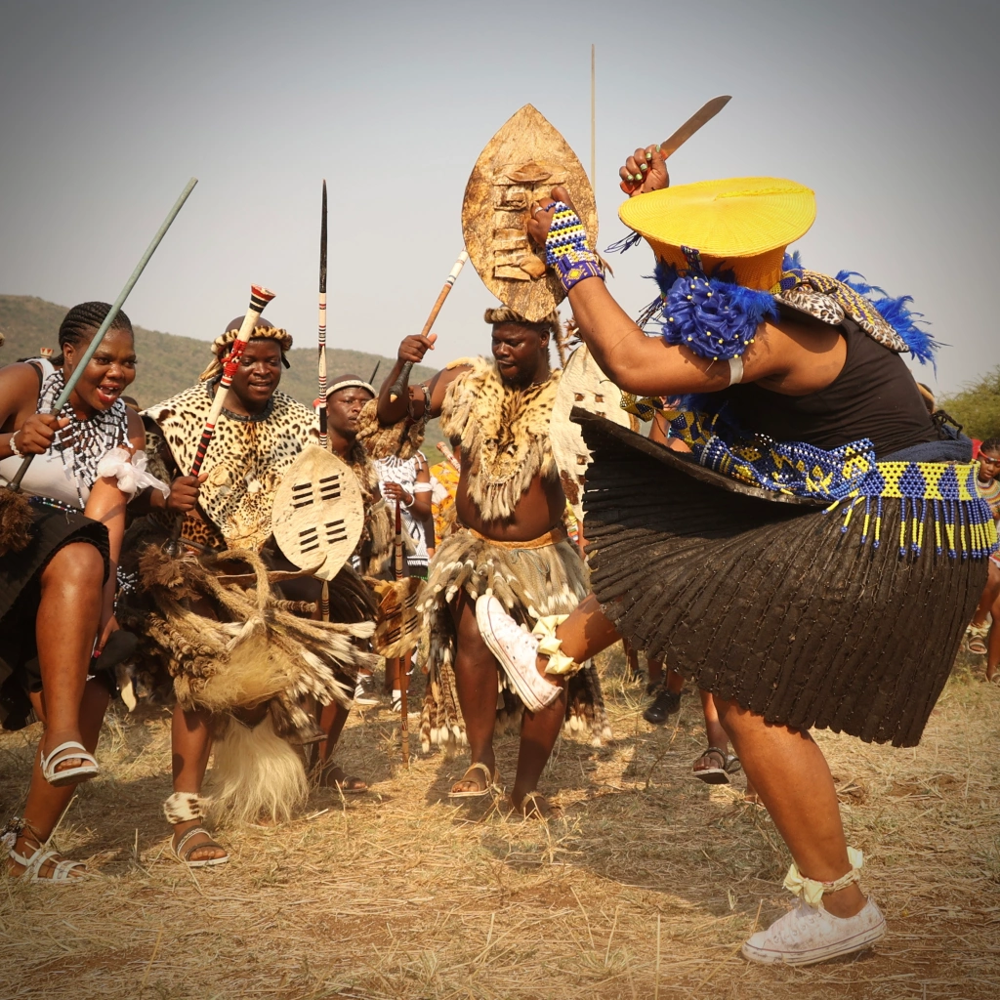

Unveiling Africa's Rich History
Mlandomatics: Exploring the untold stories, forgotten legacies, and vibrant cultures of the African continent
Discover Our MissionFeatured Research

Ancient African palace
Uncover the power and influence of Africa's architecture throughout history.
Explore More


Historical Figures
Meet the visionaries, leaders, and innovators who shaped Africa's past and present.
Discover HeroesLatest Videos

The Real Shaka Zulu- From Outcast to Zulu Nation Founder
Discover the extraordinary journey of Shaka Zulu, a legendary warrior king whose early life was marked by hardship and struggle.
Watch Full Video
"King Zwide kaLanga: The Rise and Fall of the Ndwandwe Empire"
Discover the riveting story of King Zwide kaLanga, the powerful leader of the Ndwandwe kingdom whose legacy shaped southern African history.
Watch Full Video